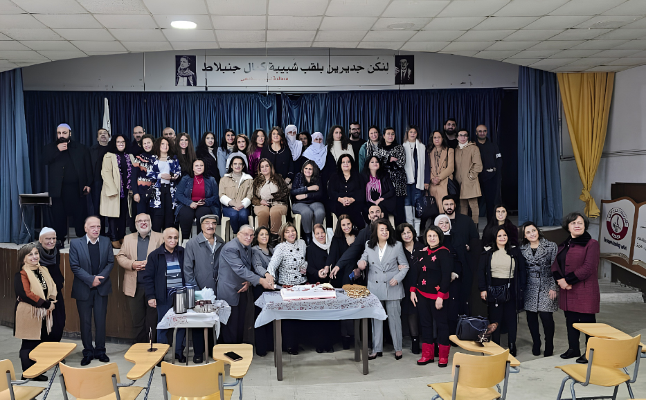

From a small building near the Aley market to one of the region's most trusted public schools — here's where we've been, and where we're going.
History
Aley Official Secondary School has weathered war, waves of enrollment, and five changes in leadership — and kept teaching straight through all of it.
Founded on January 1, 1969 under Principal Khaled Abd El Samad, with French and English secondary sections and 133 students enrolled in the first year.
The school moved to its current site, then made up of two buildings. Growing demand led to the intermediate level being added in 1973.
As the civil war began, Mr. Khaled Abd El Samad moved to Beirut's central administration, and Mr. Shafik Fakih was appointed principal.
Enrollment reached 1,775 students — so many that the school adopted a double-shift system, alternating morning and afternoon sessions between sections.
War and invasion brought enrollment down to 368 students by 1985–1986. The intermediate level was cancelled in 1987, and one building was handed to the Lebanese University's Faculty of Business Administration.
Enrollment climbed back to 792 students by 2000–2001, with many graduates earning top rankings, awards, and scholarships in official exams.
Under Principal Atef Abi Hussein, nearby branches opened in Qmatiyeh and Abadieh, and enrollment settled near 450 students by 2013.
After a year under acting principal Hayat Al Ahmadieh, Dr. Sanaa Shehayeb was appointed principal. Enrollment is rising again — up 14% this year — as families renew their confidence in the school.
Where we're headed
Mission
We provide a high-quality education that nurtures academic excellence, personal growth, and strong moral values — empowering students with knowledge, critical thinking, and the confidence to succeed in their future studies and careers, while promoting respect, discipline, and responsibility.
Vision
To become a leading educational institution in Lebanon, recognized for academic excellence, innovation, and student development — a safe and inspiring place where students reach their full potential and grow into responsible, creative members of society.
What we stand for
The principles that shape daily life at MAOSS, and what we're working to achieve.
We strive for the highest academic and personal standards, in and out of the classroom.
We promote mutual respect among students, teachers, and parents alike.
We encourage honesty, responsibility, and strong moral principles.
We support continuous learning and personal development at every level.
We maintain structure and responsibility in daily school life.
We build a supportive, inclusive environment for every family we serve.